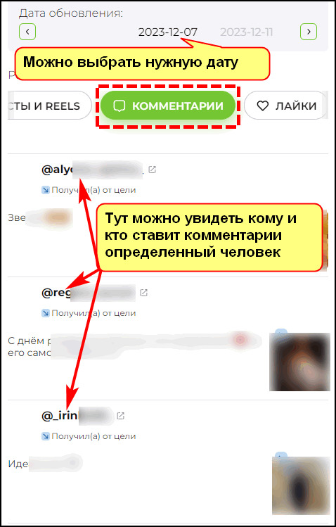
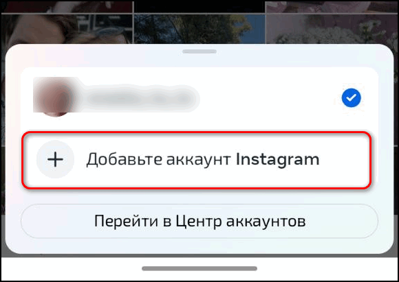
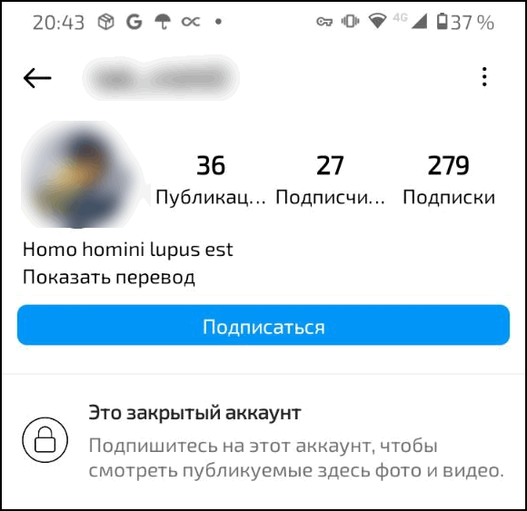
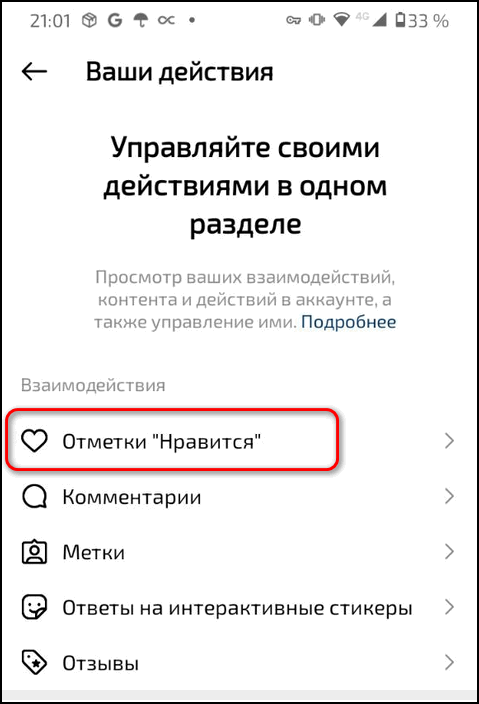
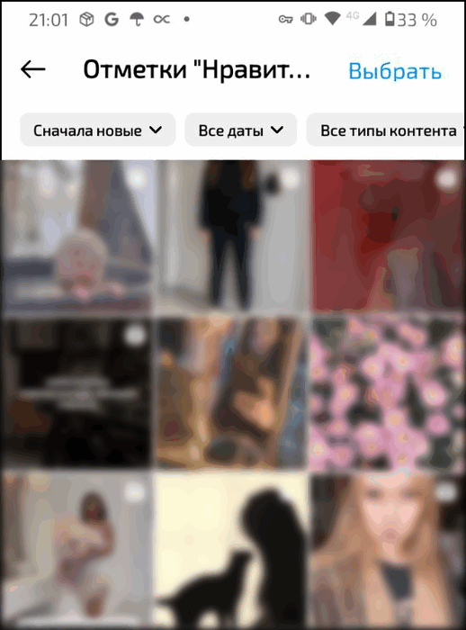

Как смотреть комментарии под постами в Инстаграме анонимно

Смотреть в Инстаграме* комментарии анонимно возможно через второй аккаунт, а с помощью онлайн-сервисов даже без регистрации или воспользовавшись стандартным поиском. При просмотре чужого профиля посетители отображаются только в статистике: по городам, полу и возрасту.
Посмотреть комментарии в Инстаграме*
В социальной сети нет ограничений на просмотр комментариев, только если посетитель не был заблокирован владельцем страницы. Бизнес-профили и аккаунты «Автор» увидят новое посещение в разделе «Статистика», но подробной информации там не указано: то есть никнейм посетителя не высветится. Единственный способ как проверить анонимного гостя, если последний поставил лайк или комментарий, даже случайно. Тогда владельцу страницы придет уведомление о новой отметке.
Как просматривать комментарии под разными типами публикаций:
- посты в Ленте. Нажать по значку в виде «чата» и появится перечень откликов;
- Reels. Открыть полностью запись и справа будет иконка «чата»;
- Истории. Отклики получает автор в личные сообщения, недоступны к просмотру.
Если просто перейти к перечню комментариев, то узнать что их кто-то просматривал – невозможно. Но в случае с Reels есть один способ проверки: список тех, кто уже посмотрел видео. В этом перечне зачастую отображаются только подписчики страницы и пользователи, оставившие лайк или комментарий. А если вы хотите смотреть Рилсы другого пользователя анонимно, даже если он вас заблокировал, тогда читайте другую статью на нашем сайте.
№1 Инсташпион - 100% способ
Инсташпион – сервис анонимного доступа к чужой странице. Он прост в использовании и не требует подключения к личному аккаунту пользователя. Чтобы работать с сервисом нужно создать внутреннюю учетную запись и добавить цель: ссылку на страницу человека, за которым будет регулярное наблюдение. Например, нужно узнать с кем общается любимый человек и кто оставляет комментарии:
- Зайти в instashpion.ru – создать учетную запись.
- В разделе: «Добавить цель» указать ссылку на личную страницу человека.

- Подождать, пока будет проанализирована информация о последних постах, Историях.
- Появятся разделы: «Reels», «Посетители», «Гости», «Публикации», «Комментарии».

- Посмотреть перечень откликов, которые были получены и отправлены.
Преимущество Инсташпиона не только в том, что доступен анонимный просмотр чужих публикаций и комментариев, но и взаимная активность. То есть, кому владелец страницы ставил лайки, отправлял отклики. У сервиса есть бесплатный пробный период, в течение которого можно добавить одну цель для наблюдения. При необходимости, пользователь может оплатить пакет услуг и подключить до 3 активных целей.
№2 Через второй аккаунт
Смотреть профиль Инстаграм* анонимно с комментариями можно и более простым способом – создать еще одну страницу. Для этого пользователю пригодится новый номер телефона и адрес электронной почты. Также, нельзя забывать о лимитах и необходимости заполнить новый профиль базовой информацией: добавить аватарку, небольшое описание, пару друзей и одну-две публикации.

Чтобы просматривать чужие записи таким способом, нужно пройти регистрацию и подтвердить, а далее – перейти к поиску и найти человека. Даже если случайно оставить лайк или комментарий – цель не узнает, что это были именно вы.№3 На закрытом аккаунте
Обойти защиту скрытой учетной записи не получится через приложения, но можно через сервис instashpion.ru. Зато можно воспользоваться вариантом со вторым аккаунтом интереснее: заполнить свой аккаунт в качестве магазина, салона или развлекательной группы и попроситься в друзья.

У владельцев скрытых страниц есть привилегия: они могут принимать или отклонять заявки на добавления, или вовсе их игнорировать. Поэтому нужно набраться терпения, прежде чем придет заветное уведомление о подтверждении подписки.Случайно поставил лайк : что делать чтобы твои комментарии не нашли
При посещении чужой учетной записи может случится так, что гость случайно оставил лайк на старой публикации. В Инстаграме* поставить отметку «Мне нравится» можно двойным нажатием по экрану, поэтому казус с лайками происходит у многих анонимов. Владелец страницы может не заметить, если:
- не был в сети и доступ к интернету был отключен. Анониму нужно быстро убрать лайк и тогда никто не узнает, что он был на странице;
- заблокировать пользователя. Блокировка убирает комментарии и лайки, некогда отправленные другому человеку. Но при разблокировке они отобразятся в уведомлениях.
В одном из последних обновлений приложения была добавлена функция: «Мои действия», где можно посмотреть на какие посты оставлены лайки и где пользователь добавил комментарии. Таким способом можно отыскать запись, куда случайно поставили «Мне нравится».
Найти публикации где оставил лайк или комментарий и убрать его
Раздел «Мои действия» отображает активность пользователя под чужими записями, Reels. Можно просматривать понравившиеся посты, ответы на свои комментарии и отклики на интерактивные стикеры. Посмотреть, где оставил лайк или комментарий и убрать его:
- Зайти в Инстаграм* - авторизоваться.

- Перейти в свой аккаунт – сверху три полоски.
- Ваши действия – Отметки «Нравится».

- Перейти к нужному посту и убрать свой лайк.
Если посетитель убирает отметку, то владельцу не придет уведомления. Такой же способ актуален, если нужно стереть все свои комментарии или посмотреть ранее отлайканные записи.